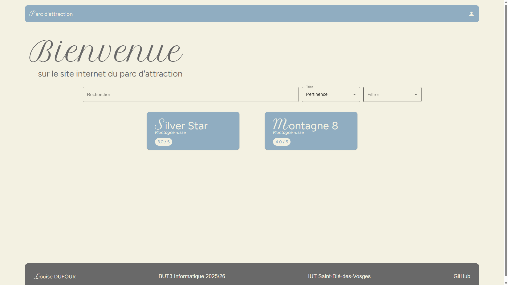
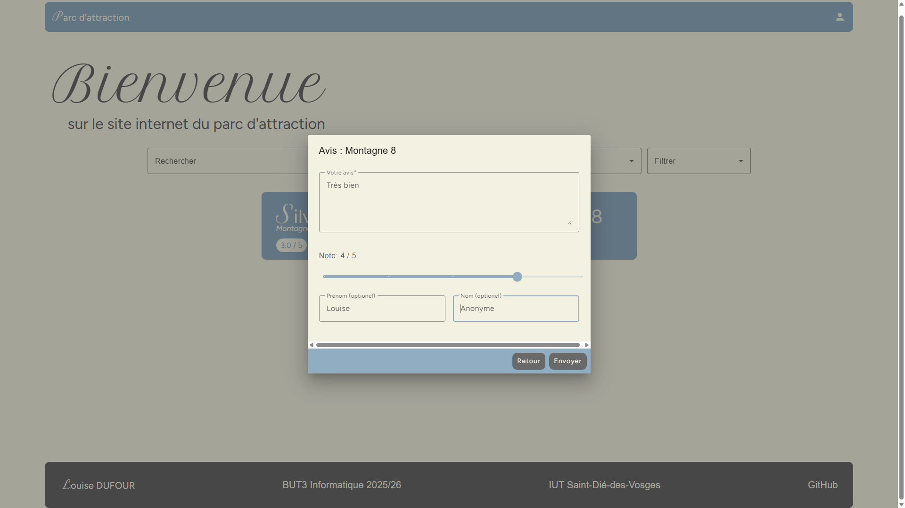
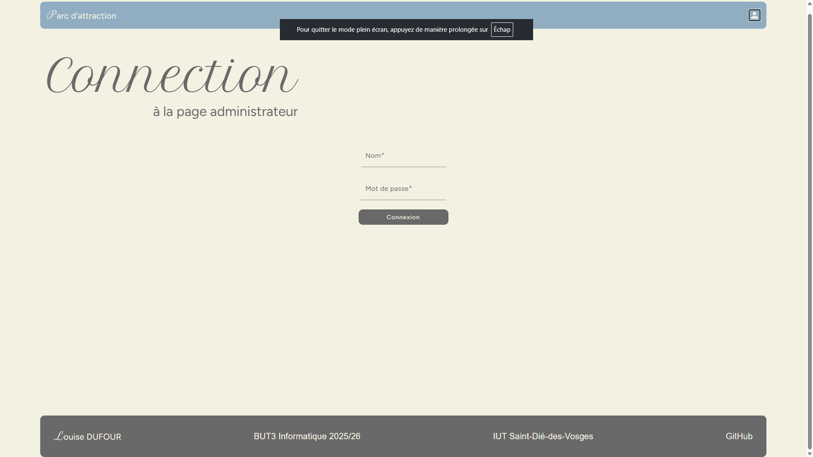

ParcAttraction
Application web de gestion d’attractions développée avec Angular, Python Flask et MariaDB

Aperçu du projet


Description du projet
ParcAttraction est une application web dédiée à la consultation et à la gestion d’attractions de parc. Le projet repose sur une architecture moderne avec un frontend Angular 17, une API Python Flask et une base de données MariaDB, le tout conteneurisé avec Docker.
L’application permet aux visiteurs de parcourir les attractions, de les rechercher et de consulter les avis, tandis que l’espace administrateur permet de gérer le catalogue via une interface protégée.
Technologies utilisées
Fonctionnalités clés
- Consultation des attractions : affichage des fiches, notes moyennes et descriptions.
- Recherche et tri : filtrage dynamique par nom, description et note.
- Gestion des avis : consultation et ajout de critiques par les visiteurs.
- Espace administrateur : connexion sécurisée et gestion des attractions visibles.
- Application conteneurisée : déploiement simplifié avec Docker et Nginx.
Défis techniques rencontrés
- Architecture complète : coordination entre le frontend Angular, l’API Flask et la base de données.
- Gestion des données : modélisation des attractions, utilisateurs et critiques.
- Interface dynamique : mise en place de composants réactifs et d’une expérience fluide côté utilisateur.
- Conteneurisation : configuration du projet avec Docker Compose et proxy Nginx.
Compétences développées
Front-end Web
Angular, TypeScript, composants, formulaires, Angular Material
Back-end Web
Python Flask, API REST, authentification, logique métier
Base de Données
MariaDB, SQL, modélisation, persistance des données
Déploiement
Docker, Nginx, organisation en conteneurs, gestion d’environnement
Conclusion du Projet
ParcAttraction m’a permis de travailler sur une application complète en combinant front-end, back-end et base de données. Ce projet m’a appris à structurer une interface interactive avec Angular, à exposer une API REST avec Flask et à gérer le déploiement d’une solution conteneurisée. Il m’a également renforcé sur les bonnes pratiques de maintenance applicative et d’organisation de projet.